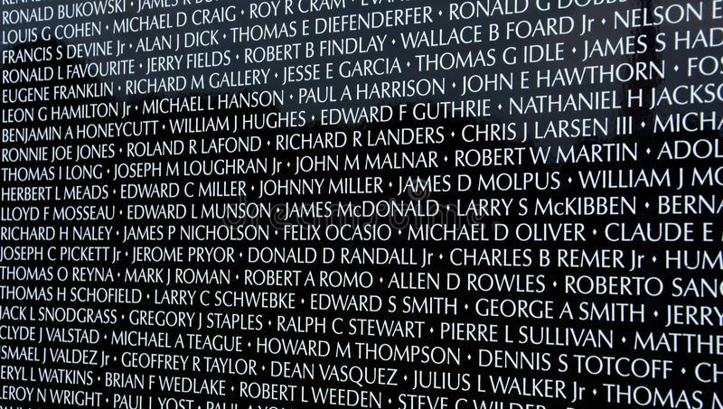
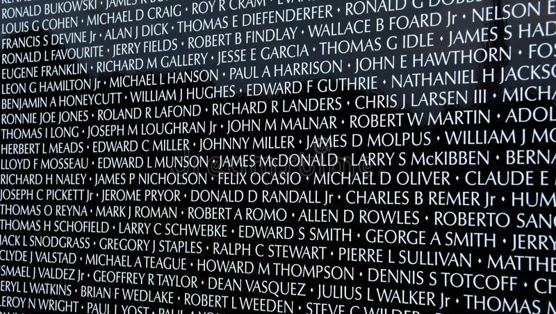

This winter I read Dead Girls by Alice Bolin and immediately knew I wanted to do a project about the Dead Girl trope. I love crime shows, true crime podcasts, and murder mysteries but I have recently been questioning why I (and other women) are semi-obsessed with tales of murdered women. I began collecting a wide array of contemporary examples, but it didn’t feel appropriate to group the real and fictional deceased so I focused on only fictional dead girls. After creating an exhaustive google doc of fictional dead girls in film, tv, and literature, I began consuming that list. It quickly became clear that four weeks was not enough time to watch or read everything, so I narrowed my focus down again to Law and Order: SVU. I created another google doc with the Hulu episode descriptions, episode title, the dead girl’s name and age, and circumstances of their death. I watched every episode that featured a dead girl or woman and took screenshots as I watched. After collecting this data, I coded an archival website that simultaneously serves as a memorial. I researched the typography of famous memorials and decided to use the classic SVU title font: Friz Quadrata. The iconic “dun dun” sound plays as you click to the name of the next dead girl (there are over 160) which is humorous at first, but quickly becomes grating to emphasize the point that the Dead Girl trope is tiring and overdone.
Back
 
